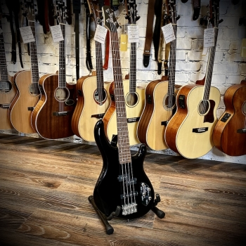

Бас-гитара
Бас-гитара — это мощный инструмент, который служит фундаментом для многих музыкальных композиций. С её глубоким и насыщенным звучанием, бас-гитара задаёт ритм и поддерживает гармонию, позволяя другим инструментам раскрыться в полной мере. Она обладает длинным грифом и толстыми струнами, что позволяет достигать низких частот, необходимых для создания стойкого басового фона.
Бас-гитаристы используют различные техники игры, включая плакирование, щипок и слэп, чтобы придать музыке уникальный характер. Эти техники позволяют бас-гитаре не только поддерживать ритм, но и выходить на передний план с соло-партиями, которые могут быть столь же запоминающимися, как и мелодии ведущих инструментов.
Визуально бас-гитары могут варьироваться от классических и элегантных до современных и экстравагантных дизайнов. Они часто имеют гладкую отделку и доступны в широком спектре цветов и стилей, что позволяет каждому музыканту найти инструмент, отражающий его индивидуальность.
Бас-гитара является ключевым элементом в таких жанрах, как рок, фанк, джаз и многих других. Её звук может быть мягким и тёплым или резким и агрессивным в зависимости от выбора музыкального оборудования и стиля игры. Бас-гитара не просто сопровождает музыку — она придаёт ей жизнь, делая каждую композицию полноценной и завершённой.